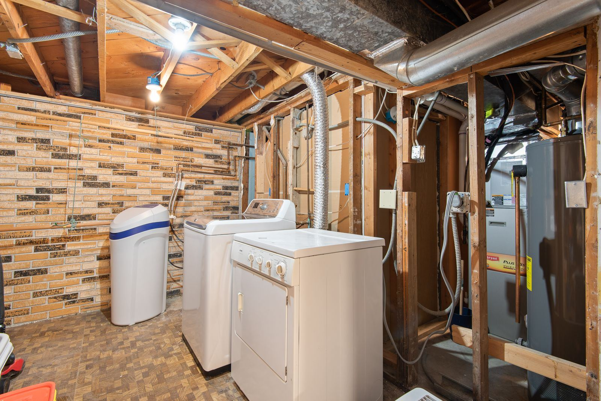

Most gas water heaters in Newton, MA work the same basic way. Gas enters through a control valve that doubles as the thermostat and feeds a burner beneath the tank, and the hot exhaust travels up a flue through the middle of the tank and out through the vent. A thermocouple, or a flame sensor on newer electronic models, tells the valve a flame is present; without that signal, the valve closes for safety. The design is dependable, but it has a few predictable weak spots. Thermocouples wear out, pilot tubes and burner ports clog, the flame arrestor screen at the base packs up with lint and dust, control valves fail, and vents lose their draft.
Diagnosing a gas water heater properly means checking combustion, not just parts. Across Newton, our technicians measure thermocouple output in millivolts, study the pilot and burner flame for color and shape, read gas pressure at the valve, and test draft at the hood so we know exhaust is leaving the house. We check the combustion chamber for soot and scorching, which point to a blocked flue or poor combustion air, and we test for carbon monoxide near the heater. Keep one rule in mind: a gas smell means leaving the house and calling the gas utility from outside before anything else, and Newton Water Heater can take over from there.
Some gas heaters need a quick part swap, and some need an honest conversation. We handle both. Thermocouples, flame sensors, pilot assemblies, hot surface igniters, gas valves, and burner cleaning are routine repairs, and we correct venting faults and flush sediment during the same visit when needed. If the tank is leaking, rusting through, or past about ten to twelve years with a major failure, we will explain why replacement makes more sense. Our installations cover like-for-like swaps and upgrades to power vent or high-efficiency models, with correct gas line sizing, sediment traps, expansion tanks, drain pans, and seismic strapping wherever required. Call (617) 209-6516 and we will get your hot water back.
What homeowners call us about most is Water Heater Repair in Newton and Water Heater Installation in Newton. Either is a good place to start.

How to Tell Something Is Wrong
A heater that is starting to struggle rarely hides it for long, and the clues are easy to spot once you know them. If any of the following sound familiar, it's worth having the unit checked:
- Showers that go cold sooner than they did a year ago
- A rotten-egg odor near the water heater, in which case get out and call the gas company first
- Rust-colored hot water or rust streaks on the tank
- A pilot that lights, then goes out when you release the knob
- A cold tank and a burner that will not come on
- Loud rumbling from the bottom of the tank
- Exhaust odor, rust, or moisture around the draft hood and vent pipe
- Soot or scorch marks around the burner access door
Don't Wait for a Total Failure
A little rust-colored water or a relief valve that drips now and then can be the first hint of a tank that is close to the end. Don't wait. Get Newton Water Heater on the phone at (617) 209-6516 and we'll get a technician scheduled.
Talk to Us About Gas Water Heater Services
Our experienced technicians are standing by to help.
Call (617) 209-6516 NowWhat Homeowners Ask Us Most
The Benefits of Professional Gas Water Heater Services
Gas water heaters are among the riskiest appliances to work on without training, because the biggest hazards are invisible. A gas connection that is not quite tight can leak slowly for days. A vent connector that has lost its slope, or a flue partly blocked by debris, can let carbon monoxide spill into the house every time the burner fires, with no smell to warn you. Gas valve and heater replacements also typically require a permit and an inspection. Relighting a pilot by following the label is something most homeowners can do; almost everything past that deserves a technician.
Professional service gets you a correct answer and a safe appliance. Instead of trial and error, we confirm thermocouple output, gas pressure, burner flame, and draft with proper tools. Every gas connection we make is tested for leaks before we leave, and vent connectors are secured with the right slope and clearances. When a replacement is needed, we size the new heater by first-hour rating, handle the permit where one is required, and add the expansion tank, sediment trap, drain pan, or seismic straps your home needs. You end up with hot water and peace of mind.
Step by Step: How a Visit Works
Our workflow is simple and thorough, so nothing gets missed between the fuel supply and the relief line. Here's the short version:
Combustion & Component Testing
We check for gas leaks and carbon monoxide, then we test the thermocouple or flame sensor, gas valve, burner, and draft so we know exactly what stopped the heater.
Clear Answers & Upfront Price
We show you what failed, explain why, and give a firm price before work begins. If the tank is leaking or near the end of its life, we tell you so.
Same-Visit Repair
Common parts ride on our trucks, so most repairs are done in one visit. When a new heater is the answer, we handle the gas connection, venting, and required safety items.
Draft & Leak Test
We light the heater and check every gas joint for leaks, confirm the vent drafts properly, and verify the burner flame and water temperature before we leave.
Questions About Gas Water Heater Services?
We give honest advice and upfront pricing on every job, big or small.
Get Help: (617) 209-6516How to Prevent Water Heater Problems
A few preventive steps can help you avoid a cold shower or a wet floor down the road. Here are our recommendations:
- Flush a few gallons from the drain valve periodically to control sediment
- Check that the vent connector is secure and rising toward the chimney or flue
- Choose a setting of about 120 degrees to balance comfort, safety, and efficiency
- Give the heater breathing room and keep flammables well away from it
- Replace a spent anode rod before the tank itself starts to rust
- Clean dust from around the base so the burner gets plenty of combustion air
- Keep working CO alarms near bedrooms and on each floor
DIY vs. Professional Gas Water Heater Services
Online videos may help in a pinch, yet lasting repairs and code-compliant installs depend on correct venting, proper relief valve discharge piping, and a trained technician. Here's how the two approaches stack up:
| Consideration | DIY Attempt | Professional Service |
|---|---|---|
| Finding the Fault | Swap parts until the pilot stays lit | Millivolt, pressure, and draft tests find the cause |
| Gas Leaks | No leak detection after the work | Every joint leak-tested before we leave |
| Venting & CO | Carbon monoxide risk unchecked | Vent secured with proper slope and clearance |
| Code Compliance | Straps, pan, and expansion tank missed | Code items installed as required |
| Tank Condition | Tank condition never evaluated | Tank and anode inspected during service |
| Result | Symptom patched, cause remains | Real fault repaired and tested |
Talk to Our Gas Water Heater Services Team
Don't let a failing water heater get worse. Call Newton Water Heater now for prompt, professional service.
Tap to Call (617) 209-6516Where We Provide Gas Water Heater Services
We serve Newton and its neighboring towns for gas water heater services, from quick same-day repairs to planned installs.